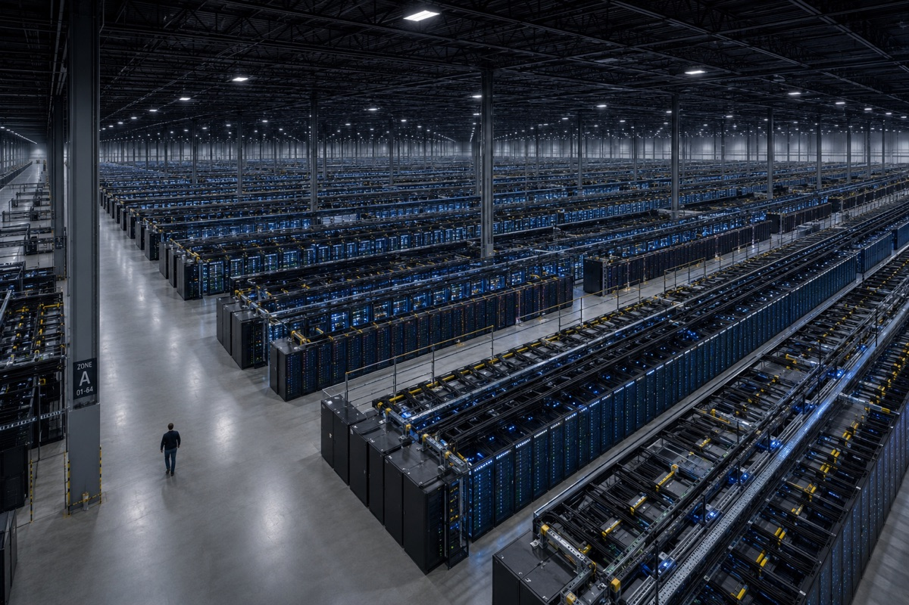

Where AI Lives
Twenty-five years ago, if you made a spreadsheet in Excel, you probably saved it on your computer’s hard drive. If that drive failed and you hadn’t made a backup, your spreadsheet could be gone.
Now think about Google Sheets. You can close your laptop, open the same spreadsheet on your phone, and pick up where you left off. Where was the spreadsheet while your laptop was closed? Google kept a copy on its servers. When you hear “the cloud,” think of computers you use over the internet. They can store files, like your spreadsheet, and they can run programs, too.
Now you share the spreadsheet with ChatGPT and ask, “Why did my expenses jump in March?” Storing your spreadsheet is one job. Remember, AI uses math to write its answer. Doing that math takes much more computing power than saving the spreadsheet.
WHY SO MUCH MATH?
Remember how AI represents each token as a vector, a row of numbers that captures its starting meaning? That row can hold thousands of numbers. As it passes through each layer, attention and transformation update those numbers to account for the words around it. That takes math at every layer, for every token the model writes. Here’s how fast it adds up for an LLM.

The ability to run that math is called compute.
That’s one question from one person. Now imagine millions of people asking questions of their own. Where does all that math happen? In a Data Center.
WHAT IS A DATA CENTER?
A data center is a building full of computers called servers. In an AI data center, those servers use chips called GPUs to do many calculations at once. Nvidia makes these chips.
Some large AI data centers cover the ground of several football fields and can use as much electricity as a small city.
In the following illustration, look for the person walking down the aisle on the left. The tall cabinets to their right are called server racks. Each rack holds servers stacked one above another. Now follow that aisle toward the far wall and notice how many rows of racks it passes.

DATA CENTER IMPACT
What does a facility this size mean for the people who live nearby?

AI companies are securing more electricity to run their data centers. Some facilities reuse water for cooling, and newer chips can do the same work with less electricity.